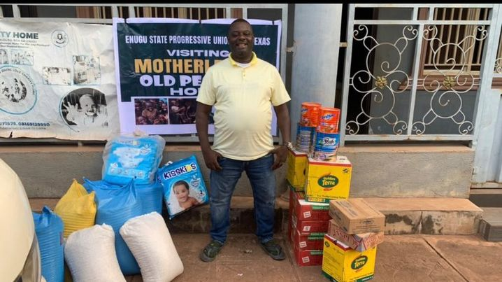
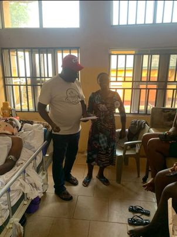

Odera Ugo foundation ia a duly registered nonprifit and nonpolitical organization in Nigeria with registeration No:12345 formed in 2022 but officially registered with Nigeria Corporate Affairs Commission on 27th june 2022.The foundation was established out of patriotic spirit, to contribute to the welfare of underprivileged children, youth and women, with a focus on their healthy development
The establishment of the Odera Ugo Foundation was born out of a deep-seated desire to address the pressing challenges faced by individuals and communities in need. Odera Ugo, driven by personal experiences and a profound sense of empathy, recognized the urgent need for a platform dedicated to uplifting lives and creating positive change. Having witnessed firsthand the impact of poverty, inequality, and lack of access to essential resources, Odera Ugo felt compelled to take action. Drawing inspiration from the belief that every individual deserves dignity, opportunity, and support, the foundation was founded with a mission to make a meaningful difference in the world.
Motivated by the vision of a more compassionate and equitable society, Odera Ugo and like-minded individuals came together to establish the foundation. They sought to create a vehicle for channeling resources, expertise, and energy towards addressing systemic issues and empowering marginalized communities. Through a combination of philanthropy, community engagement, and strategic initiatives, the Odera Ugo Foundation aims to tackle a wide range of social, economic, and environmental challenges. By fostering collaboration, innovation, and sustainable solutions, the foundation strives to build a brighter future for all. Ultimately, it was the shared belief in the power of collective action and the unwavering commitment to making a positive impact that led to the establishment of the Odera Ugo Foundation.

Odera Ugo foundation ia a duly registered nonprifit and nonpolitical organization in Nigeria with registeration No:12345 formed in 2022 but officially registered with Nigeria Corporate Affairs Commission on 27th june 2022.The foundation was established out of patriotic spirit, to contribute to the welfare of underprivileged children, youth and women, with a focus on their healthy development
By donating now you can directly impact the lives of the next generation for the better.
 